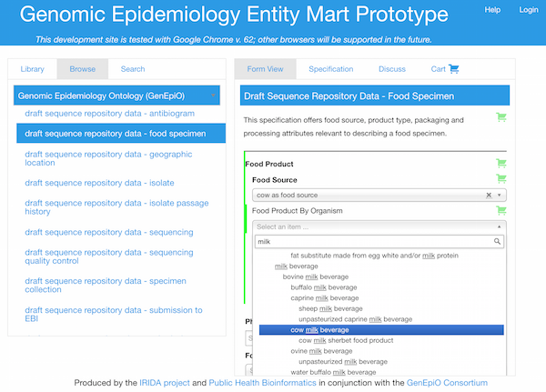

The Genomic Epidemiology Entity Mart (GEEM) is a portal for examining and downloading ontology-driven specifications for standardized data components. The portal aims to provide term reviewers and software developers with ways to utilize application ontology contents (a collection of terms and relations from other ontologies that combine to model the operation of some domain) without the need to be trained in ontology curation or querying.
The GEEM portal enables an ontology's categorical and numeric datums and more complex data entities to be viewed as HTML form elements, including term preferred name, definition, synonyms, database cross-references, categorical selection lists, and numeric data entry and validation fields. Specifications for these elements can be generated for reuse by software developers; logged-in users will be able to save selected elements in packages that can be updated and downloaded later in JSON, YAML, or Microsoft Excel format; and finally, a form viewer is provided to show how such specifications can be used to drive data entry and reporting. GEEM itself does not currently provide a data storage platform - this is left as an implementation detail that will vary among agencies.

Ontology-driven standards benefit from features of open-source published OWL 2.0 ontologies such as globally unique identifiers for terms, multilingual label and definition functionality, and formal logic validation and reasoning over controlled vocabularies. Such a specification can be designed to satisfy the requirements of an environmental pH measurement, or a person's age, or a more structured entity like a contact address, or a genomic sequence repository submission for example.
Resources
GEEM is still in its development phase, so expect its functionality to change.
The GEEM portal enables users to browse and download GEEM enabled ontology-driven data specifications, and (soon) make customized packages of specifications and standards for reuse in content management and data conversion applications.
A GEEM form viewer script can render the HTML form for a given ontology identifier (assuming it has been annotated as a GEEM specification). Simply include the identifier of the desired form, for example: http://genepio.org/geem/form.html#obolibrary:GENEPIO_0001624
Example forms:
- Draft sequence repository contextual data standard
- Epidemiology line list fields
- Environmental specimen, including numeric data with units
The GEEM github repository contains the technical support Wiki and technical support issues app as well as the evolving code base and example ontology driven specifications.
Note that ontology identifiers referenced within specifications may be deprecated through the adoption of more appropriate terms from other ontologies, or the relocation of terms to other ontologies. Like many ontologies in the OBOFoundry, GenEpiO details each term replacement to facilitate database updates. This is a core strategy for encouraging the reuse and consolidation of ontology content.